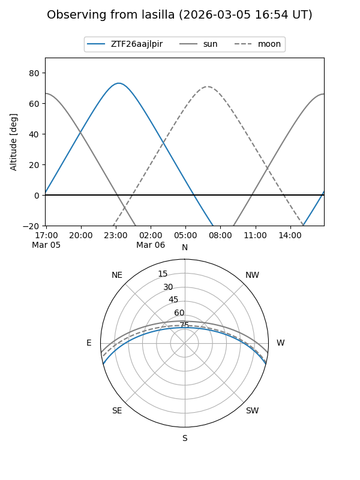
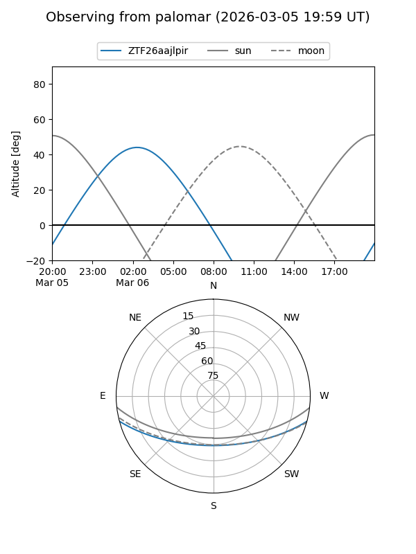

ZTF26aajlpir
Target ZTF26aajlpir at 2026-03-06 05:24
Aliases and brokers:
FINK: link
Lasair: link
ALeRCE: link
alt names
ZTF26aajlpir (ztf,fink_ztf)
Coordinates:
equatorial (ra, dec) = 81.4772,-12.56883
equatorial (HMS+DMS) = 05:25:54.54,-12:34:07.80
galactic (l, b) = (214.9113,-24.57794)
Flags:
Photometry:
last ztfg=18.77
1 ztfg detections
Lightcurve
Visibility


Additional plots